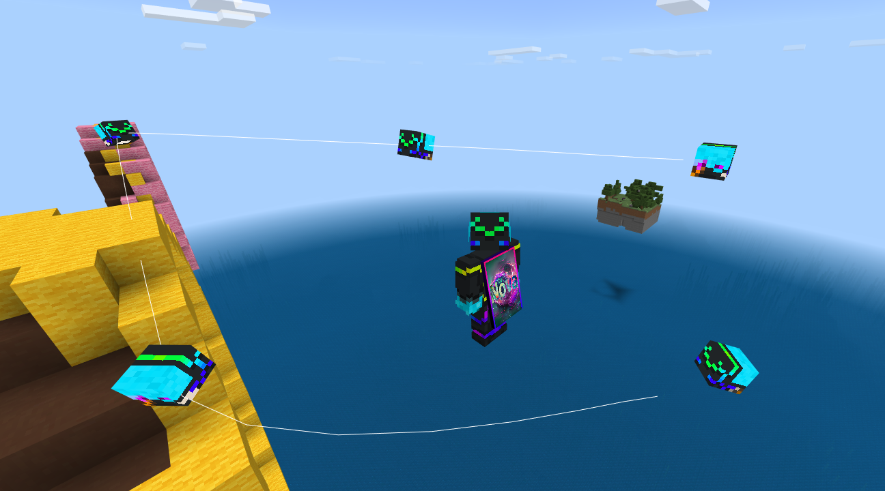
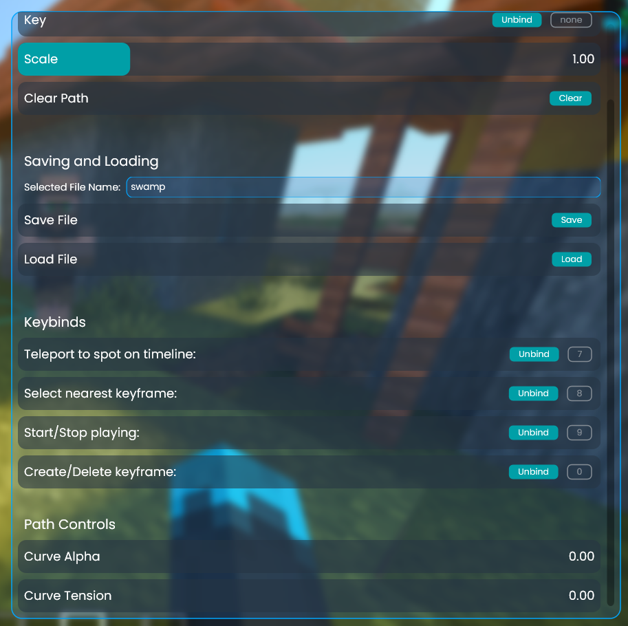

A keyframe animation system for the player's camera. It can be used to do cinematic shots.
The controls are a bit of a mess, it causes crashes, and it's very not polished but it's also very cool.
The path can be set with keyframes and customized with a couple parameters. It uses Catmull-Rom splines to automatically smooth out the path between keyframes. These splines are also used to smooth out the acceleration between splines, giving you very good control of where the camera is and when. I haven't seen this technique done anywhere else.
In the below video, I space the keyframes out every 2 seconds, but this doesn't have to be the case. They can be set with millisecond precision.
-Showing where the camera will be facing at each keyframe.
-A more updated view of the controls